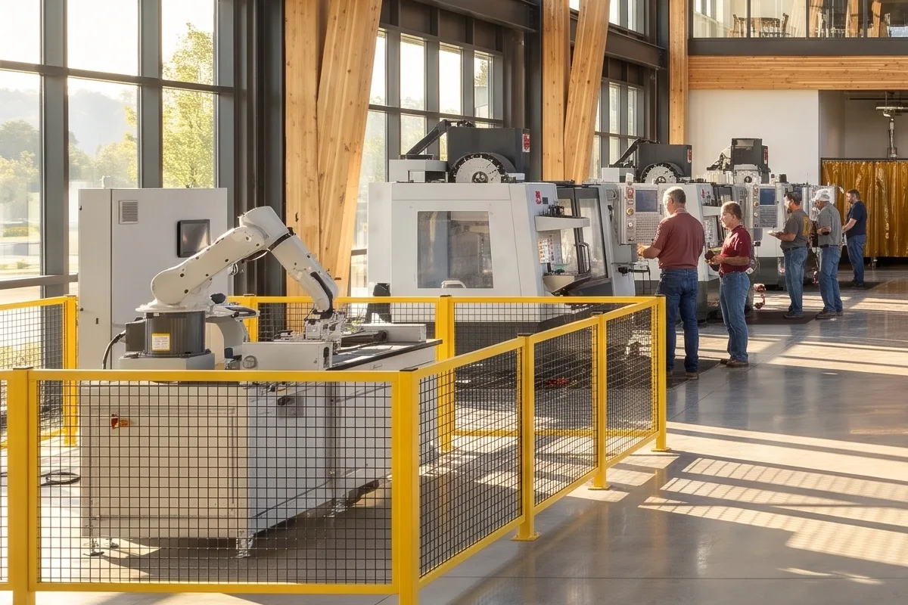

Training that matches the work
Built with the employers who hire here.
The Training Center sits at the end of Main Street, a short walk from the manufacturing park. Employers help write the curriculum, lend equipment and interview on site.
Programs run from six-week certificates to two-year apprenticeships, with evening sections for people already working.

Programs
Five tracks, one floor.
- CNC machining16 weeks
- Industrial robotics24 weeks
- Welding and fabrication12 weeks
- Mechatronics2-year apprenticeship
- Electrical systems18 weeks